ROOF on theWit
Rooftop lounge & event venue, Chicago
An events-driven site for a rooftop bar 27 stories above Chicago's Loop.
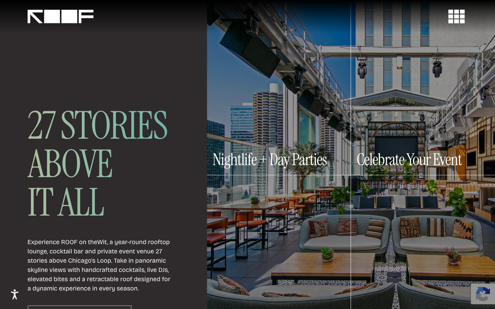
- Client
- ROOF on theWit
- Sector
- Hospitality
- My role
- Lead web designer
- Services
- Website design and build
The project
ROOF on theWit is an iconic rooftop 27 stories above Chicago's Loop, recognized as Hotel Bar of the Year and one of the Top 3 Rooftop Bars in the World. 97 Switch has long supported ROOF with a website that evolves with its events, menus and private parties.
The challenge
ROOF's reputation is built on atmosphere, nightlife and constant programming, and a static site couldn't keep up. It needed a website that captured the energy of the space, stayed current with weekly events and menus, and moved guests quickly from inspiration to booking.
What I did
A split-screen entrance
Visitors choose nightlife or private events on arrival and are routed straight to the right experience.
Experience-first design
Full-screen photography and video echo the skyline, and condensed serif type carries the height of the building into the layout.
Always-current content
A flexible content structure keeps up with DJ nights, seasonal menus and special events without breaking the design.
Clear paths to booking
Accolades sit up front for credibility, with simple routes to tables, private events and house rules.
The live site
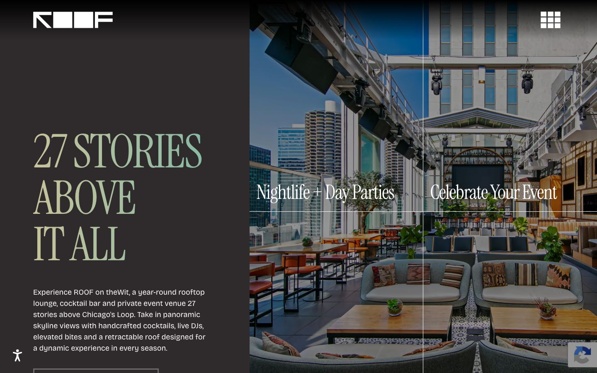
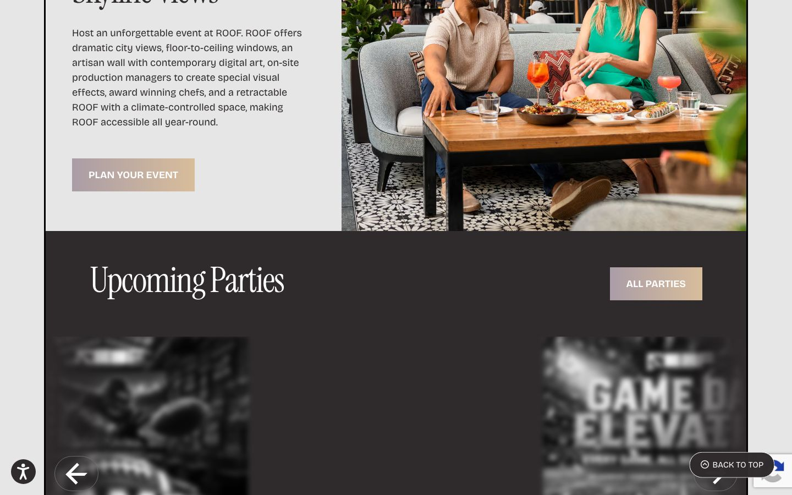
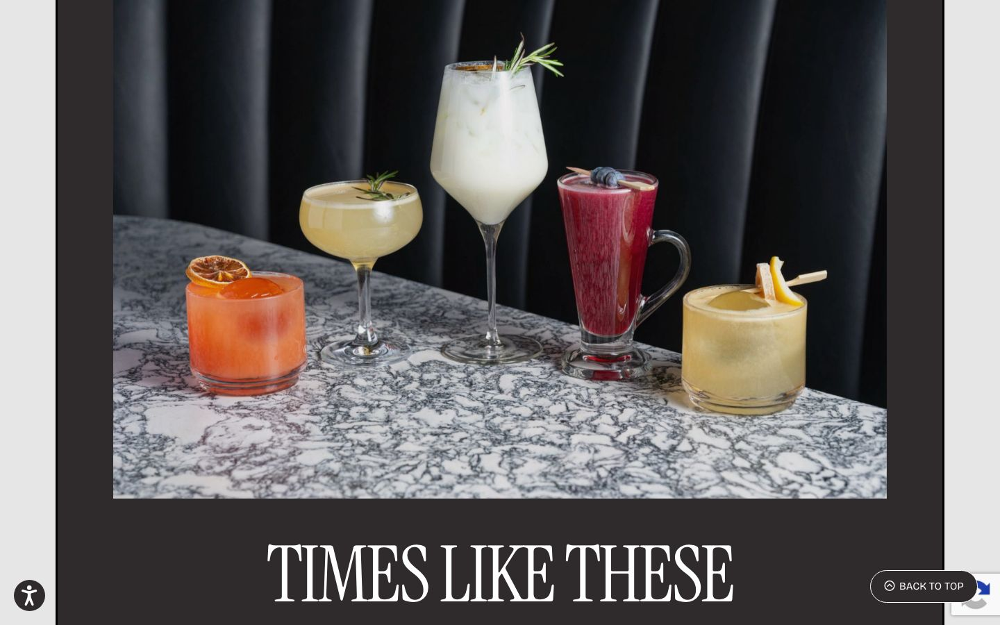
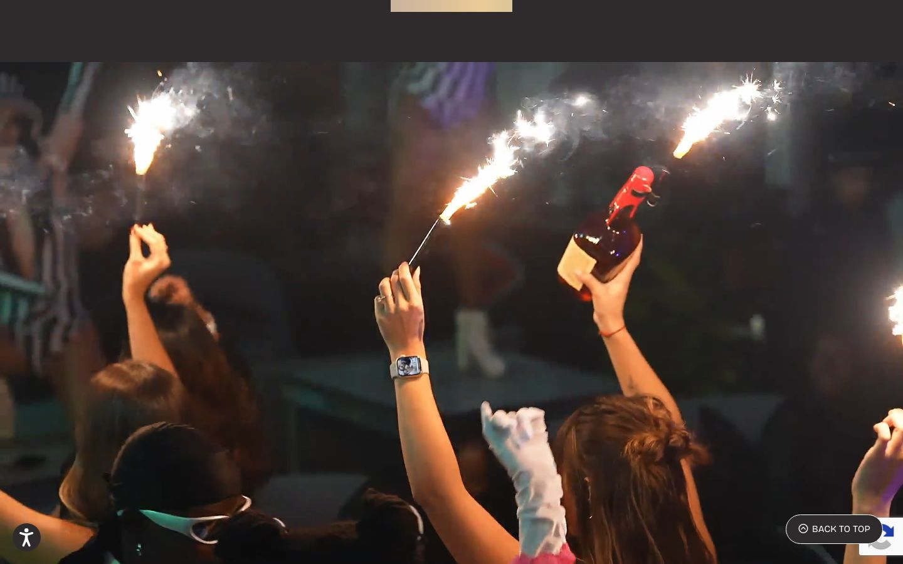
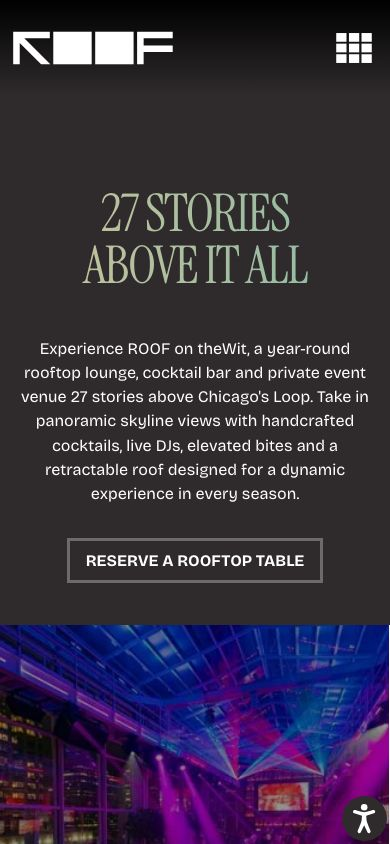
Project visuals
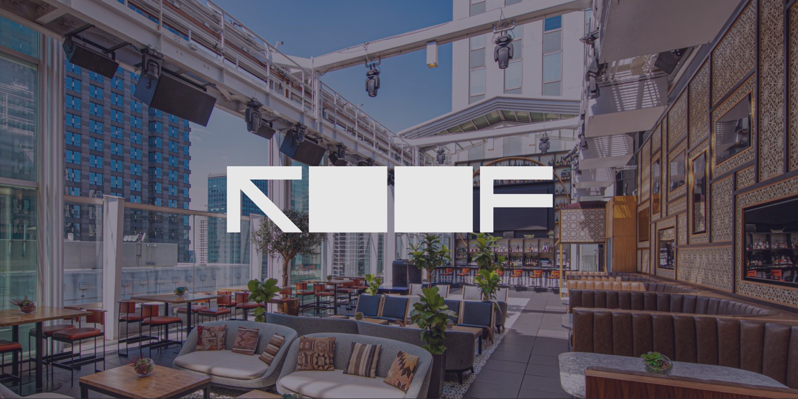
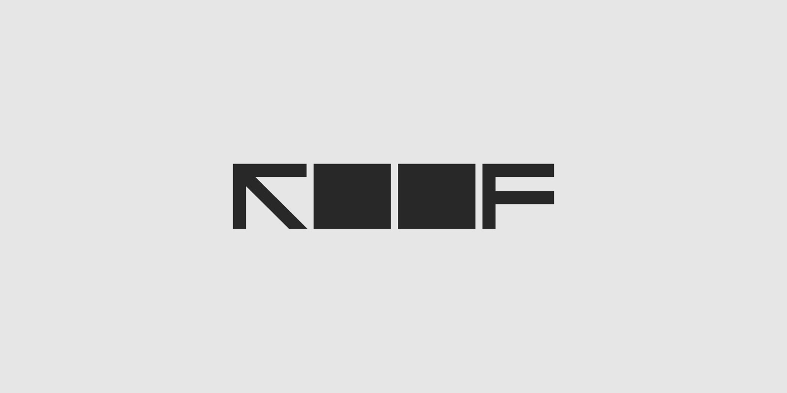
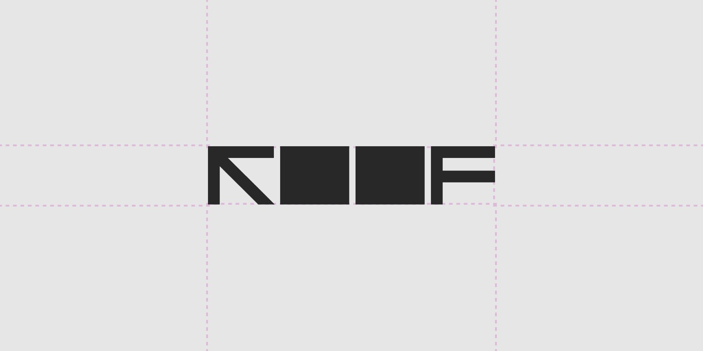
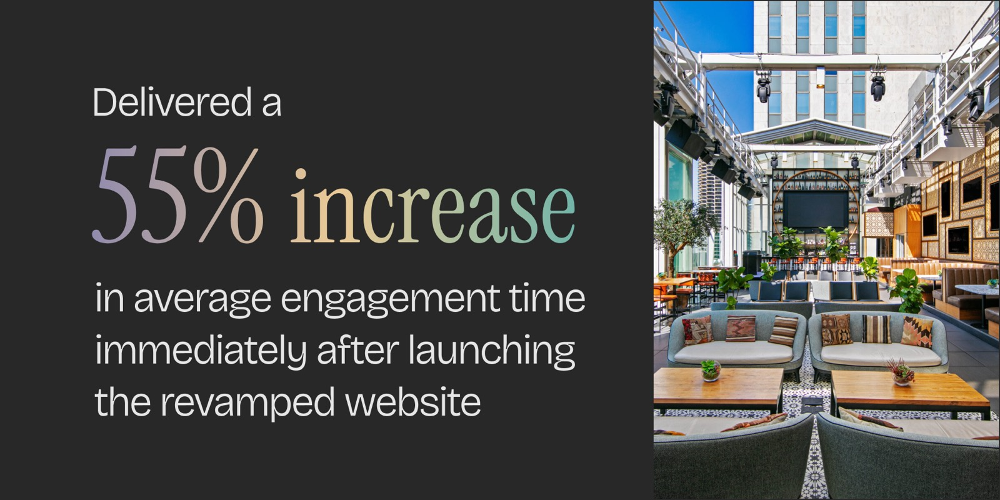
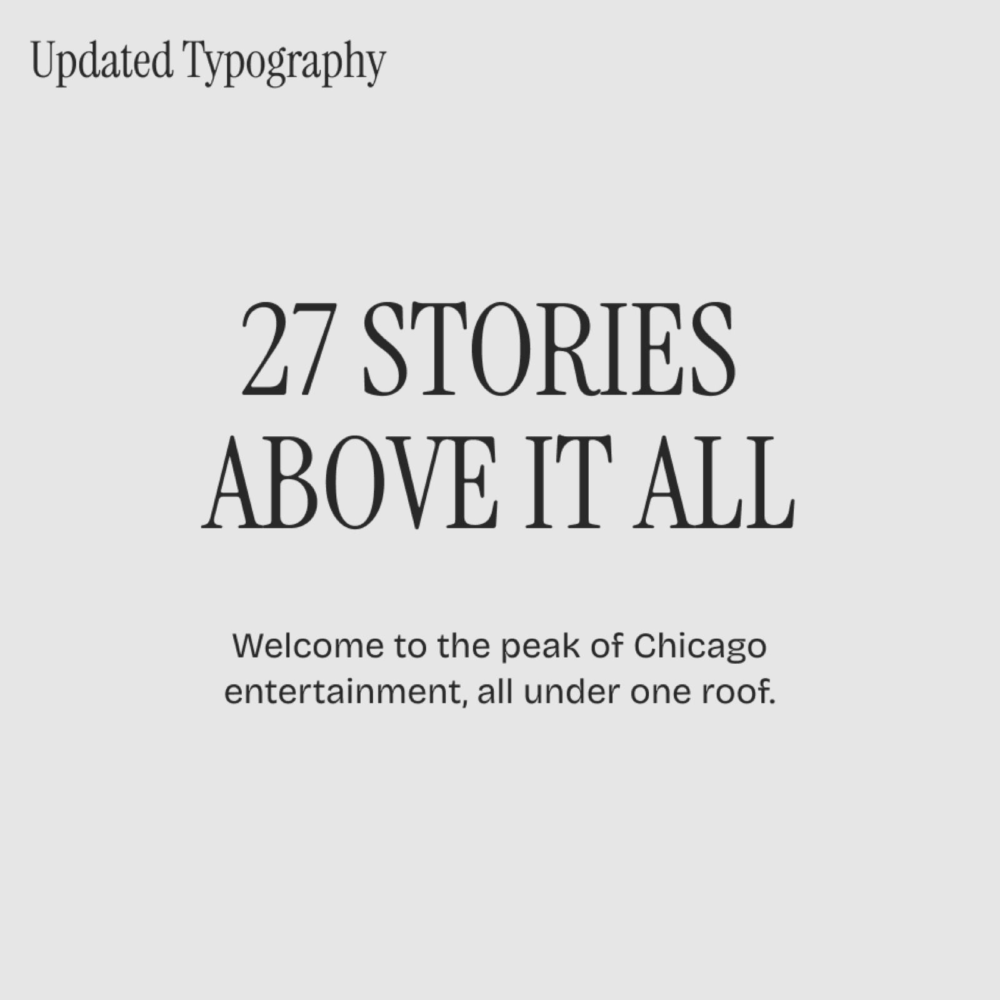
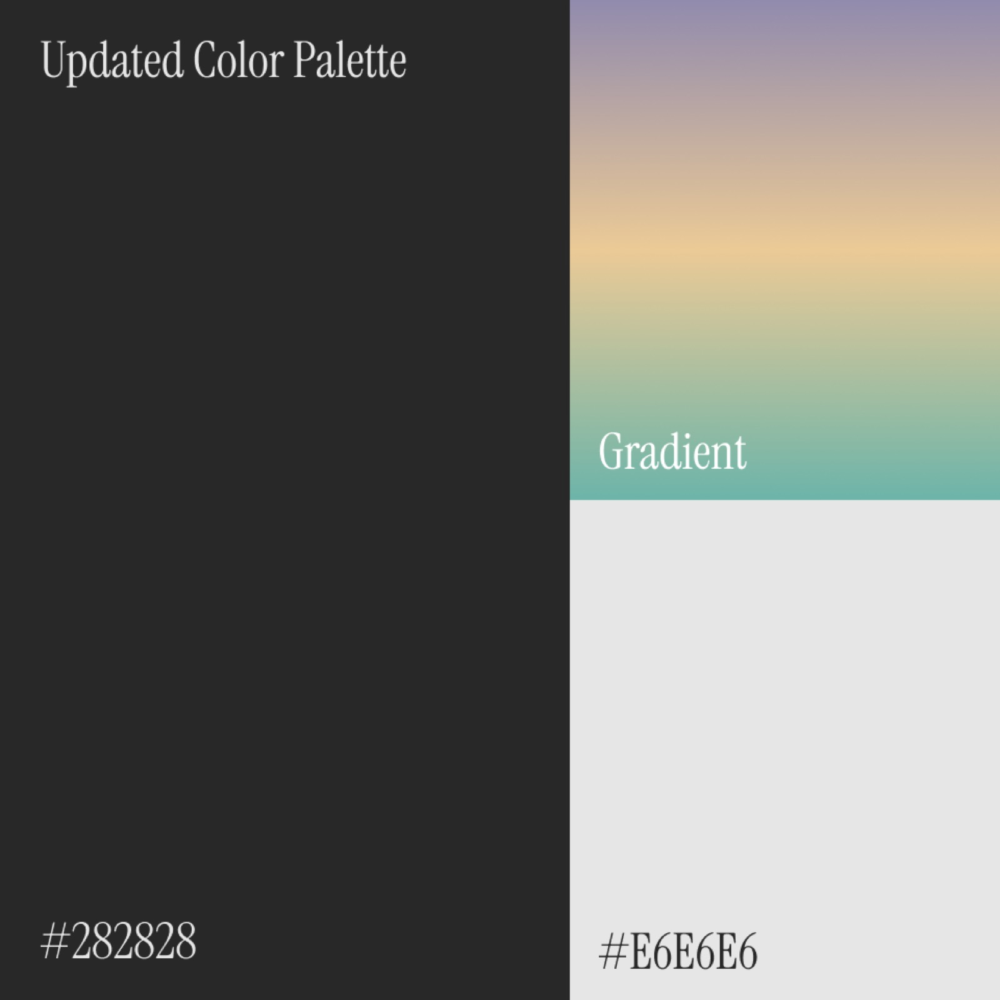
“Communication is prompt and efficient and regular check-ins conducted. We know we can rely on 97 Switch to enhance our offerings and bring fresh ideas and perspectives to showing off our product in the best possible light.”
Results
- 55%Increase in average engagement time right after the revamped site launched
- 10%Year-over-year increase in conversions after a revised marketing strategy
- 25%Year-over-year increase in event visibility
Results are for 97 Switch's overall work with ROOF, including marketing strategy.